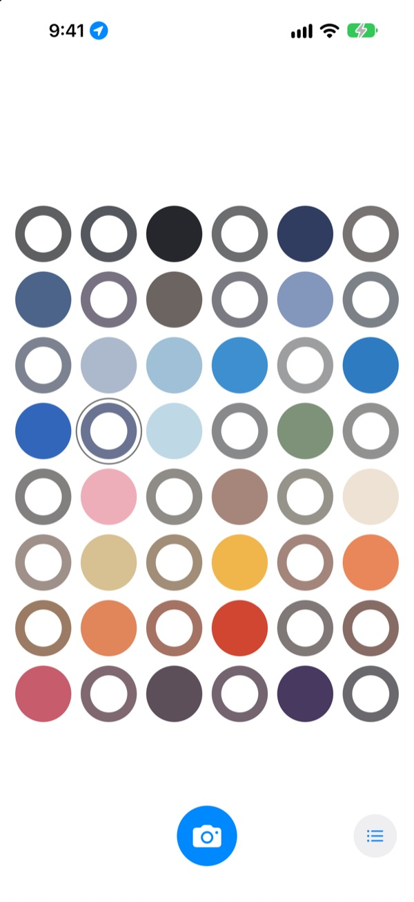
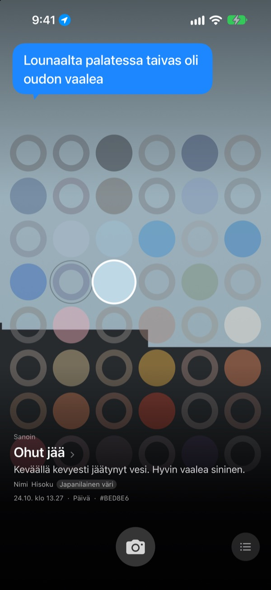
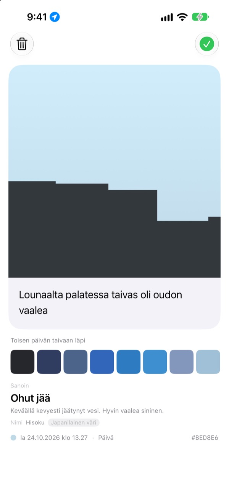
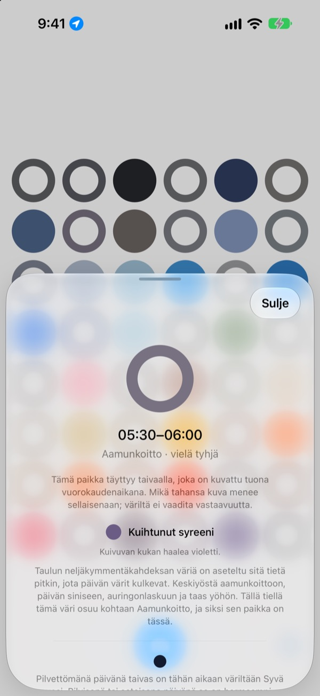
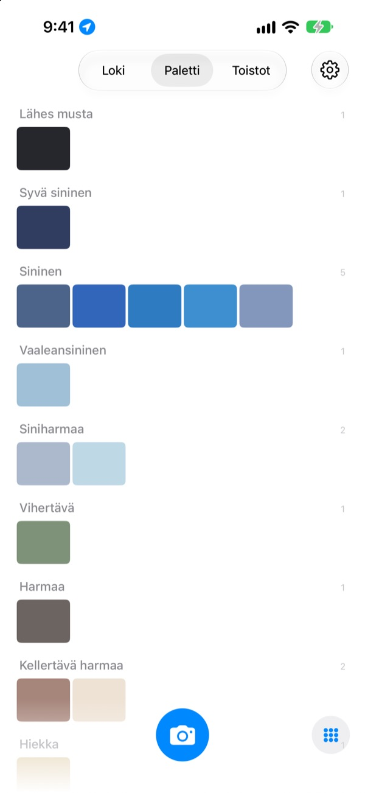

Minkä värinen
taivas oli tänään?
Kuvaa taivas, niin neljänkymmenenkahdeksan ruudun laudalla sen kellonajan ruutu täyttyy tavoittamallasi värillä. Väri saa myös nimen, jonka näkee mielessään: ohut jää, uima-altaan laatta, kypsä kaki.
Ilmainen. Ei tiliä, ei kirjautumista.

Kokeile lautaa
Napauta ruutua, niin näet, mihin vuorokaudenaikaan se kuuluu. Lisää taivaskuva, niin tämän hetken ruutu täyttyy. Kelaa sitten päiviä eteenpäin ja katso, miten lauta muuttuu.
Katsot taivasta joka päivä, mutta et muista siitä yhtään väriä
Taivas töihin mennessä, taivas lounaalta palatessa: illalla värit ovat jo poissa. Ne taivaskuvat, jotka sentään otit, hukkuvat kaiken muun sekaan kuvakirjastossa. SkyDex kerää ne väreinä ja näyttää yhdellä laudalla, mitä reittiä tämän päivän taivas kulki.
Jokainen taivas saa nimen
Jokainen väri saa ensin nimen, jonka näkee silmissään, kuten ohut jää, uima-altaan laatta tai kypsä kaki. Sen alla on nimi, jolla on alkuperä: korealainen väri, japanilainen väri, pigmentti tai verkkoväri.
Kun osuma on lähellä, siinä lukee Nimi. Kun ei ole, siinä lukee rehellisesti Lähin nimi.

Jätä rivi
Kortti avautuu heti kuvaamisen jälkeen. Kirjoita, mitä ajattelit katsoessasi ylös, niin teksti nousee taas taivaan päälle aina, kun napautat sitä ruutua laudalla.
Voit myös sävyttää kuvan toisen päivän taivaan värillä ja jakaa tuloksen kuvana.

Tyhjät ruudut näyttävät tien
Napauta tyhjää ruutua, niin näet, mihin vuorokaudenaikaan se kuuluu ja minkä väristä taivasta kannattaa etsiä. Se kertoo myös, miltä pilvetön taivas näyttää siihen aikaan, sijaintisi auringonnousun ja -laskun mukaan.
Värin ei tarvitse osua. Pilvisen päivän harmaa on sekin sen päivän taivaanväri.

Loki, paletti, toistot
Selaa taivaitasi järjestyksessä ja kokoa värit paleteiksi, kuten sininen, harmaa ja hiekka. Kuvaa sama tunti toisena päivänä, niin taivaat asettuvat rinnakkain.
Kotivalikon widgetit näyttävät päivän laudan ja päivän taivaan yhdellä silmäyksellä.

Alkuun kolmella askeleella
- 1
Katso ylös
Napauta laudan alla olevaa kamerapainiketta ja anna taivaan täyttää neliö.
- 2
Ruutu täyttyy
Tämän hetken ruutu saa tavoittamasi värin ja nimen.
- 3
Jätä rivi
Kirjoita avautuvaan korttiin, mitä ajattelit.
Näin lauta jakaa päivän
- Keskiyö · 0.00–5.00
- kuusi ruutua
- Aamunkoitto · 5.00–8.00
- kuusi ruutua
- Päivä · 8.00–16.00
- kaksitoista ruutua
- Myöhäinen iltapäivä · 16.00–18.00
- kuusi ruutua
- Auringonlasku · 18.00–21.00
- kaksitoista ruutua, yksi vartin välein
- Yö · 21.00–24.00
- kuusi ruutua
Auringonlaskun aikaan, kun taivas muuttuu nopeasti, ruudut ovat tiheässä, ja keskellä yötä, kun se tuskin liikkuu, ne ovat leveitä. Ylimpänä on keskiyö, ja päivä kulkee alaspäin.
Kysymyksiä
Miten ruutu täyttyy?
Tänään kuvaamasi taivas täyttää kuvaushetken ruudun, vaikka väri ei olisi sitä, mitä odotit. Sellainen taivas sillä hetkellä oikeasti oli. Aiempien päivien taivaat menevät sisään värin mukaan: jos taivas on tarpeeksi lähellä jonkin ruudun väriä, se täyttää sen, ja kukin taivas täyttää vain yhden ruudun.
Eilen täynnä ollut ruutu on tänään tyhjä.
Lauta on aina tämä päivä. Ruutu, jonka eilinen taivas täytti kellonajan perusteella, sovitetaan päivän vaihtuessa uudelleen pelkän värin mukaan. Siksi lauta on joinakin päivinä lähes täynnä ja toisina tyhjän näköinen. Kuvasi eivät ole kadonneet: kaikki taivaat ovat Lokissa ja värijärjestyksessä Paletissa.
Täytetyt ruudut haalistuvat.
Tarkoituksella. Kuva säilyttää oikean värinsä viikon ja haalistuu sitten hitaasti seuraavien kahdeksan viikon aikana. Sitä ei poisteta, eikä se koskaan haalistu kokonaan. Kuvaa taivas siihen aikaan uudelleen, niin ruutu palaa heti täyteen väriinsä. Ei katkeavaa putkea, ei takaisin ansaittavia pisteitä.
Pitääkö värin osua?
Ei. Hyväksyttyä tai hylättyä ei ole. Jokainen kuva tallentuu, ja pilvisen päivän harmaa on sekin sen päivän taivaanväri.
Miksi sovellus kysyy sijaintiani?
Vain siksi, että se voi tyhjää ruutua napauttaessasi kertoa, miltä pilvetön taivas näyttää siihen aikaan, sijaintisi auringonnousun ja -laskun mukaan. Se käyttää likimääräistä sijaintia kilometrin tarkkuudella, eikä koordinaatteja liitetä kuviin. Jos kiellät sijainnin, kaikki toimii silti, ja vertailukohtana on Soul.
Voinko lisätä taivaan kuvakirjastosta?
Kyllä. Kameran sijaan Kuvat-apista valittu taivas rajataan sekin neliöksi ja täyttää tämän hetken ruudun aivan kuin juuri ottamasi kuva.
Miten poistan kuvan?
Avaa kuva ja napauta Poista, tai pyyhkäise sitä vasemmalle Lokissa. Se poistuu laitteelta ja iCloudista yhtä aikaa. Jos poistat sovelluksen, kopio jää iCloudiin, joten taivaasi palaavat, kun asennat sen uudelleen.
Mitä tapahtuu, kun vaihdan puhelinta?
Taivaasi tallentuvat omaan iCloudiisi, joten ne siirtyvät uudelle laitteelle, jolla on kirjauduttu samalle Apple-tilille. Ei erillistä tiliä eikä palvelinta, eikä kuviasi tai värejäsi lähetetä kehittäjälle. Ei mainoksia, ei seurantaa.
Onko se tosiaan ilmainen?
Kyllä, kaikki ominaisuudet ovat ilmaisia. Jos pidät sovelluksesta, voit antaa kehittäjälle tipin sovelluksessa, mutta tippi ei avaa mitään uutta.
Millä laitteilla se toimii?
iPhonessa, jossa on iOS 17.0 tai uudempi, vain pystysuunnassa.
Bugit, oudot toiminnot tai mitä tahansa haluat sanoa: kirjoita osoitteeseen leeo@kakao.com. Kun kerrot, mitä olit tekemässä ja mikä iOS-versio sinulla on, syy löytyy paljon helpommin.